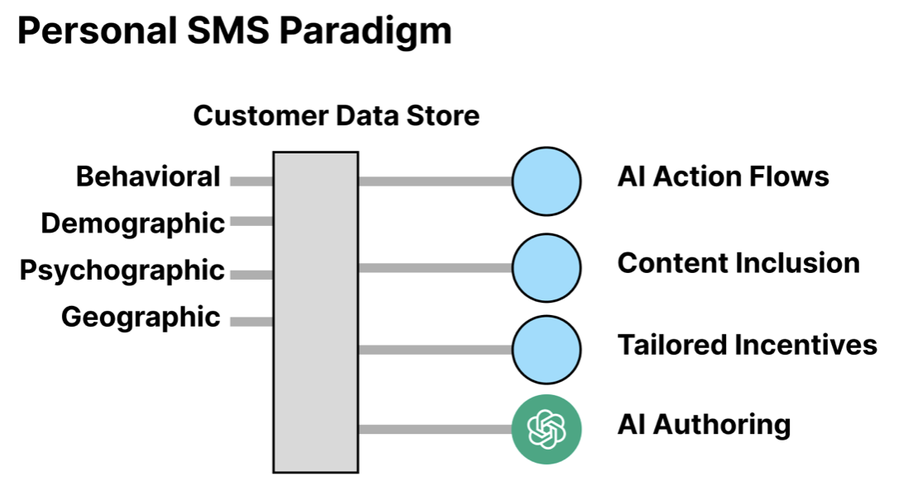

What Makes a Marketing Text Personal?
The Role of Personalization in Effective E-Commerce Campaigns
Posted on by Alexander Reznik
“We employ a vast variety of ads. If we are using twenty magazines we may use twenty separate ads. This because circulations overlap, and because a considerable percentage of people are attracted by each of several forms of approach. We wish to reach them all.” - Claude Hopkins in Scientific Advertising
Search “SMS Marketing” and you’ll find offers for “Smarter Sending”, “Personalized Messaging”, or “Conversational Texting” abound. 98% of customers open marketing SMS within fifteen minutes of reception and these three concepts are the way to improve what goes into those messages. Each refers to a component of crafting eCommerce marketing texts that sell more product: triggers, content, and style. To clarify these elements, we'll look at how leading platforms like Klaviyo, Attentive and Postscript approach personalization, and explore opportunities for brands to leverage data to improve their SMS strategy. We narrow the scope of SMS marketing to eCommerce text promotions for a surgical assessment of the term “personalization”.
Triggers, content, style - and AI - are the pillars of potent, personal SMS that engage and convert. Customers, and the bottom line, stand to benefit from a messaging approach focused on these three axes. The path to more profitable conversations at scale runs predicates on a willingness to leverage data-understanding to power them.
Triggers: Action Flows & Behavioral Segmentation
Klaviyo is the name to know in discussions of SMS triggers. Their platform relies on web analytics to set action-based messaging activations. If you leave a pair of jeans in the shopping cart, the jean shop builds a Klaviyo action flow with a trigger for stale-cart items. Intelligent segmentation lets that jean shop divide the stale-cart customers into those who’ve recently bought an item from the store and those that haven’t. Each gets an according, distinct message. A number of integrations are offered to build triggers based on more than just web behavior, yet it remains that the both these and the segments are only as good as their underpinning data.
Opportunity: AI Built and Powered Action Flows
In Action Flow construction, there are several spots where hard-coding isn’t the best approach. One is message timing. By applying advanced analytics to customer purchase history and web behavior data, intelligent predictions about optimal reach-out timing are simple. A message is most likely to convert after some optimal number of customer stale-cart days. Machine learning determines this optimal timeframe, which can then be slotted into the "time delay" spot in the action flow. Klaviyo’s made a bet in this direction by releasing a few-click action flow builder powered by AI.
Content: Behavioral and 3rd Party Data
There are two customer-specific data points in the example on the left: 1. The customer’s name is “Julie” and 2. She bought the “RadiantBoost Moisture Serum”. Attentive builds messages anchored on multiple customer data points, giving them a content advantage over the more simple standard. In this case, the content is based on Julie’s shopping history and customer profile. The former is an example of “internal” data to the brand - web analytics and purchase history - and the latter of “external” - 3rd party origin not i.e LinkedIn, demographic, social - data about Julie the person. Content is also a contextual influence for the selection of client-facing information, which is to say that not all the content is included. Where a customer’s made ten purchases, they’re warmed by an address as a loyal member rather than disenchanted by a recounting of all of their spending history.
Opportunity: 3rd Party Customer Data Enrichment
The answer to “is more better?” Is a big “yes” in the message personalization case. As addressed, more data means more anchor points to use as influence for or to include in messaging. Social, behavioral, demographic, psychographic, and geographic info is underutilized in targeted content due to lack of availability. Google and Meta’s ad platforms are so successful because they do rely on this and more detailed data such as search histories, platform-purchases, and ad-clicks. Among axes to improve targeted outreach and build trust, this one sits firm at the top.
Style: Building Trust Through A Dynamic Brand Voice
Though there’s yet to be mention of it, texts are a form of writing, a form of prose. Syntax, tone, length, even language are factors in communicating content to customers. For personal content, the underlying content datapoints differ for each message and so a unifying style is imposed to make each sound as though spoken from the same voice. If the former jean shop knows a lot or nothing about a customer, they want the words in their message to sound like them - their store’s personality.
Tweaking brand voice is a style choice, but it’s not personalization. To personalize style, the brand voice for each message is augmented to accommodate the customer. If a platform achieved this, customers would receive branded SMS in a “voice” much closer to their preferred one. A fine-grained message personalization is unlikely to be required though (customers aren’t that unique), and a categorical, stylistic segmentation is more optimistic.
Postscript makes an attempt via what they call their “AI Brand Center”. Stores specify and provide examples of their “voice” to be augmented and tuned to produce messages on top of tailored content. This may generate one-off messages, but functionally it’s closer to the second stage of the diagram above. Postscript forces the content into a singular voice rather than a distinct one per customer.
Opportunity: GenAI Writing + Customer Buy-In
“Marketing Spam” is a word that gets tossed around a fair bit. Content tailoring dispels a deal of the “ad-speak” issue, but not all. Writing messages that “speak” to a customer is the final step in e-commerce SMS that sell. GenAI makes the development of segmented voices possible. Again, segmentation data anchors are required. If customers can be split through richer data understanding, they can be served by messages that talk to their needs. Geography is the easiest lever to pull. The in-store experience is distinct across locations, the style of speech is slightly different in a comfortable way for those shopping in their home stores. A saleswoman interacts differently with the elderly man and the young woman purchasing the same product. SMS messaging taking the same approach convert more. The best ads serve customers as though in conversation - this is achievable at scale.
Considerations: Do Unique Messages Mean Unique Failures?
Complete personalization isn’t a silver bullet. Data and deployed AI present a number of considerations:
1. AI Scaled Personalization generates variance in messaging content/style that lead to a subset of “bad” messages being sent out. Including a human filter that checks these messages is important to avoid missteps. AI scaled filters are possible and readily available through batched scoring systems and similar. Don’t put blind trust in a system that’s talking directly to customers.
2. Brand Voice is diluted through the process of scaled stylistic tailoring. Talking to customers in a more comfortable manner is not equivalent to giving up all sense of a brand voice. The voice is still that, but it’s singing a different song depending on the customer.
3. Messages will be perceived by some customers as “too personal”. The question of “how do you know this?” Is one to keep close when labeling content as contextual vs customer-facing. Be conscious of content inclusion since, just as in-person, customer comfortability is key to purchasing. The three drawbacks above are tampered by a human in-the-loop and an automated filter to track what’s being sent. If anything, seeing the variance play out will help to hone a concrete direction for brand’s who struggle with that.
Incentives: Actions Do Speak Louder Than Words
Messages with mobile coupons convert 4x better than those that don’t. i.e Value matters in the confined character count of a text. Despite attempting to replicate a conversation, SMS is a distinct form-factor where customer attention is a couple seconds not a couple minutes. Retaining attention is best accomplished through discounts. This isn’t contradictory to the personalization case as outlined. Personalization enables discounts that are jet fuel and customer data intelligence creates tailored, dynamic incentives.
Every purchase isn’t the same for the bottom line (customer lifetime value is unique) and incentives should match. Building behavioral segments with aligned incentives is the way. Give a loyal customer a bigger discount on a high ticket item left in their cart, Offer to send a special bag for the one-time “this is a luxury” customer. Promote services that will get segments to buy. All discounts aren’t made equal and this matters at scale.
Conclusion: Data and Value Power Personalization
Klaviyo is the name to know in discussions of SMS triggers. Their platform relies on web analytics to set action-based messaging activations. If you leave a pair of jeans in the shopping cart, the jean shop builds a Klaviyo action flow with a trigger for stale-cart items. Intelligent segmentation lets that jean shop divide the stale-cart customers into those who’ve recently bought an item from the store and those that haven’t. Each gets an according, distinct message. A number of integrations are offered to build triggers based on more than just web behavior, yet it remains that the both these and the segments are only as good as their underpinning data.
